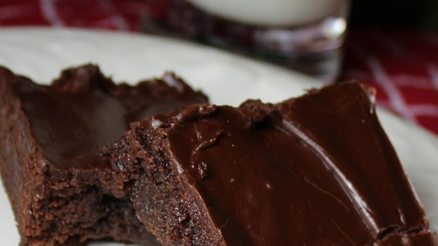

The Recipe and Image used is made by "Tarmia" from "AllRecipes.com ." Here is a link to the original Recipe and image: Original Recipe
8 cups vegetable oil for frying
1 1/2 cups of milk
2 eggs
2 cups all-purpose flour
1/2 teaspoon groudn cinnamon
1/2 teaspoon salt
3/4 cup confectioner's suger
1) In a deep-fryer, or heavy skillet, heat oil to 375 degrees F (190 degrees C)
2) In a large bowl, beat eggs together. Combine flour, baking powder, cinnamon and salt. Stir into the egg mixture until smooth.
3) While covering the funnel hole with one hand, pour 1 cup of batter. Start from the center in a swirling motion to make a 6 or 7 inch round. Fry on both sides until golden brown. Remove and drain on paper towels. Sprinkle with confectioners'
The recipe and Image used is made by "Lisaberg" from "AllRecipes.com" Here is the link to the original recipe and image: Original Recipe
6 ounces dry fettuccine pasta
1 (8 ounce) package cream cheese
6 tablespoons of butter
1/2 cup of milk
1/2 teaspoon of garlic powder
salt and pepper to taste
2 skinless, boneless chicken breast halves - cooked and cubed
2 cups chopped fresh broccoli
2 small zucchini, julienned
1/2 cup choed red bell pepper
1) Bring a large pot of lightly salted water to a boil. Add pasta, and cook for 8 to 10 minutes, or until al dente; drain.
2) While pasta is cooking, melt cream cheese and butter in a skillet over low heat. Stir until smooth. Stir in milk, and season with garlic powder, salt, and pepper. Simmer for 3 minutes, or until thickened, stirring constantly.
3) Mix in chicken broccoli, zucchini, and red pepper. Cook 3 minutes over medium heat, then reduce heat, and simmer 5 minutes, or until vegetables are tender. Serve over fettuccine.
The recipe and Image used is made by "Angie" from "AllRecipes.com" Here is the link to the original recipe and image: Original Recipe
1/2 cup butter
1 cup white sugar
2 eggs
1 teaspoon vanilla extract
1/3 cup unsweetend cocoa powder
1/2 cup all-purpose flour
1/4 teaspoon salt
1/4 teaspoon baking powder
3 tablespoons butter, softened
3 tablespoons unsweetened cocoa powder
1 tablespoon honey
1 teaspoon vanilla extract
1 cup confectioners' sugar
1) preheat oven to 350 degrees F (175 degrees C). Grease and flour an 8-inch square pan
2) in a large saucepan, melt 1/2 cup butter. Remove from heat, and stir in sugar, eggs, and 1 teaspoon vanilla. Beat in 1/3 cup cocoa, 1/2 cup flour, salt, and baking powder. Spread batter into prepared pan.
3) Bake in preheated oven for 25 to 30 minutes. Do not overcook
4) To Make Frosting: combine 3 tablespoons softened butter, 3 tablespoons cocoa, honey, 1 teaspoon vanilla extract, and 1 cup confectioners' sugar. Stir until smooth. Frost brownies while they are still warm
